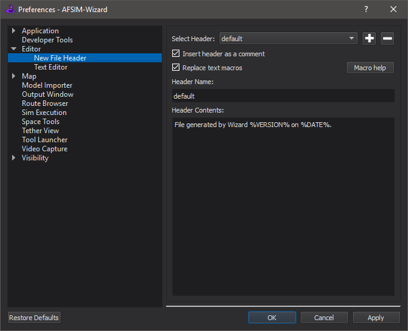

New File Preferences - Wizard¶
The New File preferences can be used to set custom file headers for files generated by AFSIM.
The user may create as many profiles as desired and switch between them using the drop-down menu on the top of the window.
The Add header button (+) creates a new blank item. The Remove header button (-) removes the currently selected item.
Checking Insert header as a comment will cause a # to be inserted at the beginning of every line. Checking Replace text macros will cause certain words looking like %THIS% to be replaced by other text when the file is created.
The list of available macros can be found by clicking the Macro help button. The available macros can also be found here.
Macros |
Replaced by |
|---|---|
%% |
% |
%YEAR% |
The current year. |
%MONTH% |
3-letter abbreviation for the current month. |
%DAY% |
The current day of the month. |
%DATE% |
The current date. Format: Jan 1, 1970 |
%VERSION% |
The version of AFSIM. |
%FILE% |
The name of the file generated, with extension. |
%DIR% |
The directory the generated file is in. |
%PATH% |
The complete path to the generated file. |
When creating a new file, if there is/are…
No headers: the file is generated without a header.
One header: the file is generated with that header.
Multiple headers: the user is prompted for which header to use.